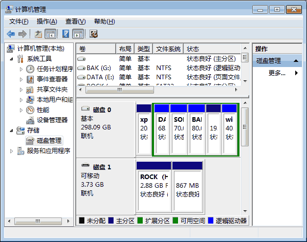
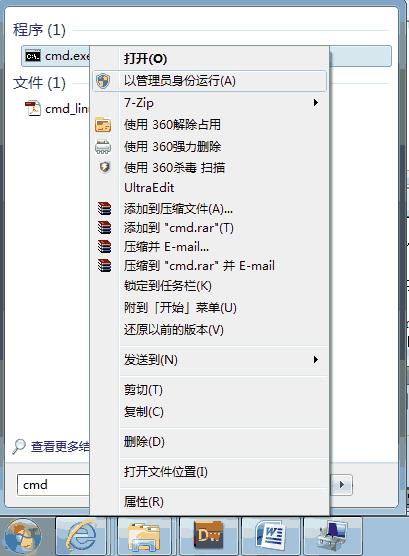
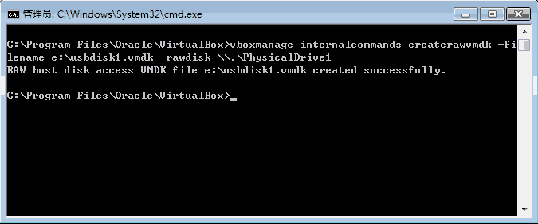

在VirtualBox中的虚拟系统启动后，我们可以通过选择主机中已加载的USB设备来读写U盘。但是，如果希望使用U盘来启动虚拟系统的话，却不能直接在虚拟系统的设置界面中选择。
其实，通过命令行工具是可以实现这一功能的。用来启动的U盘应使用USB-HDD方式，在VirtualBox中，可以将其映射为一个硬盘。
首先，将U盘插到主机上，等正确识别出来U盘之后，我们需要了解它是系统中的第几个磁盘设备。
右击“我的电脑”或开始菜单中的“计算机”在弹出的菜单中选“管理”命令，弹出如下计算机管理窗口。选中“磁盘管理”窗口如下（WIN7中）。

在这个例子中，U盘显示为磁盘1。
接下来打开cmd命令行窗口，WIN7中在开始菜单中搜cmk，在程序中右击cmd.exe选“以管理员身份运行”，否则因权限问题下面的命令运行不成功。

进入VirtualBox的安装目录下，执行下图中的命令。这个命令将在指定目录下创建一个vmdk虚拟磁盘文件，而这个文件会链接到指定的物理磁盘。
vboxmanage internalcommands createrawvmdk -filename 虚拟磁盘文件名 -rawdisk 设备路径其中第一个参数是vmdk文件的完整路径和文件名，第二个是指定的磁盘设备路径，因为刚才在磁盘管理中看到的U盘为磁盘1，所以这里写\\.\PhysicalDrive1。

这个命令成功执行完成之后，就可以在虚拟系统的硬盘设置中选择刚才生成的vmdk文件了。
如果要从这个设备引导系统，应该设置为第一控制器主通道。
用同样的办法，也可以将物理硬盘设备挂载到虚拟系统中，实现让虚拟系统直接读写实际的硬盘分区，不再赘述。